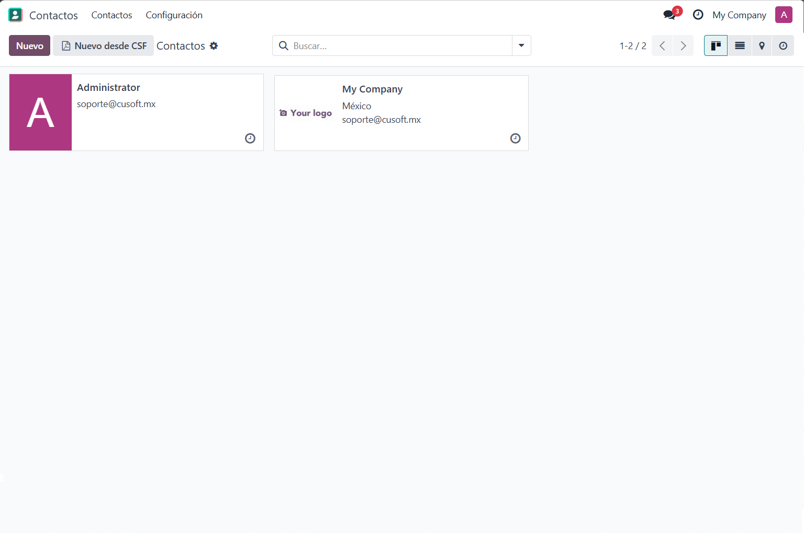
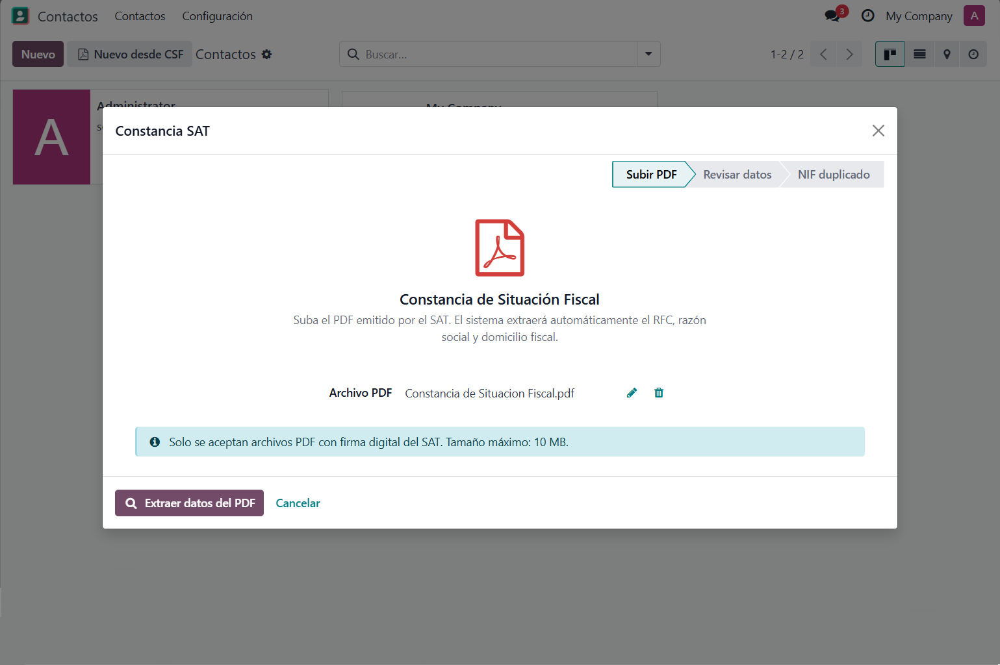
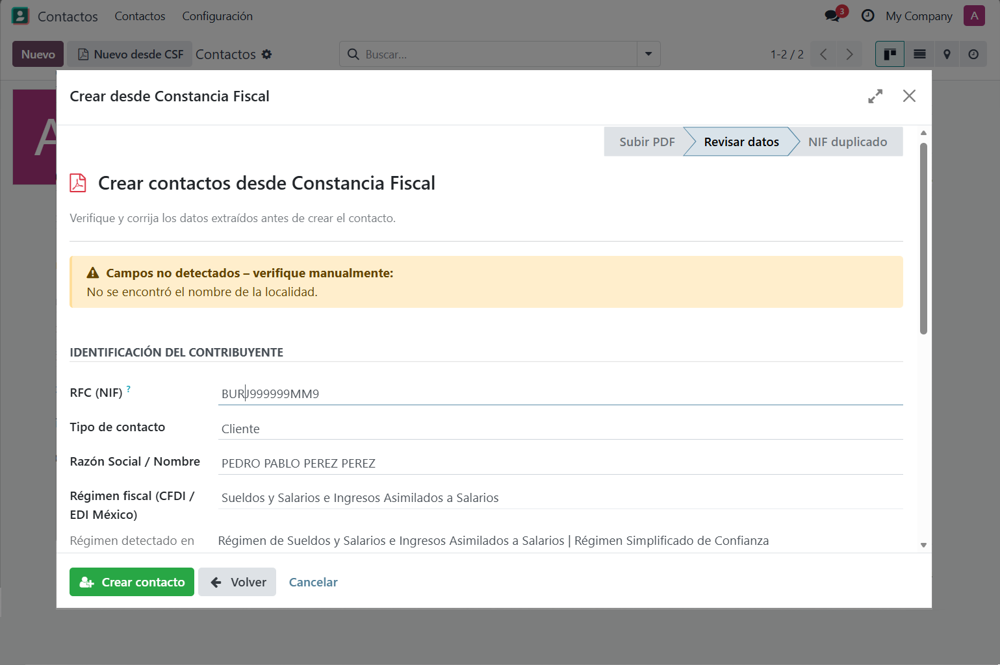
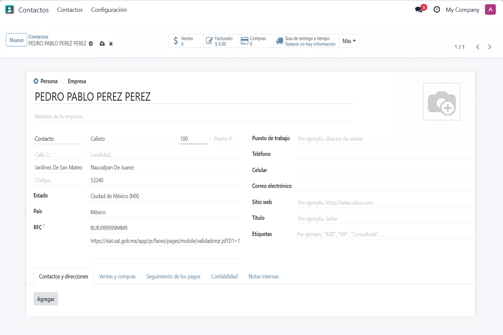
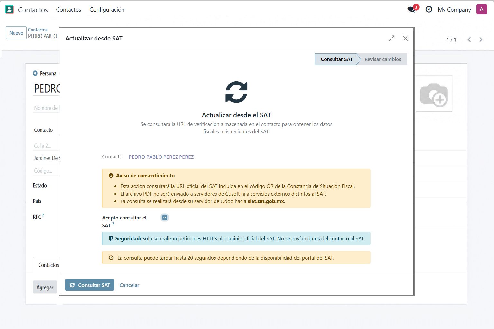
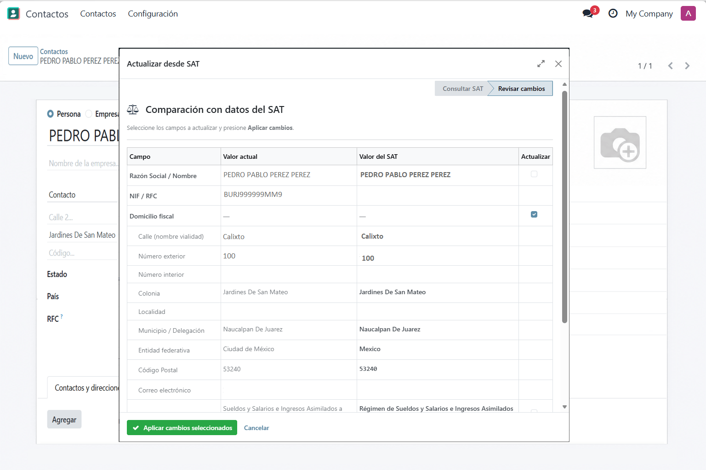

Este módulo permite capturar información fiscal mexicana directamente desde la Constancia de Situación Fiscal en PDF, reduciendo errores manuales y acelerando el alta de clientes y proveedores en Odoo.






Cuando el PDF contiene un código QR válido, el módulo puede utilizar la URL oficial incluida en la constancia para consultar la información disponible en el portal del SAT.
El módulo no envía el PDF a servidores de Cusoft. La consulta se realiza desde el servidor de Odoo hacia el dominio oficial del SAT: siat.sat.gob.mx.
Antes de cada consulta en línea, el usuario debe confirmar un aviso de consentimiento en el asistente de actualización.
libzbar0 para lectura de códigos QR con pyzbar (Linux: sudo apt install libzbar0).
Cusoft — https://www.cusoft.mx
Correo: apps@cusoft.mx